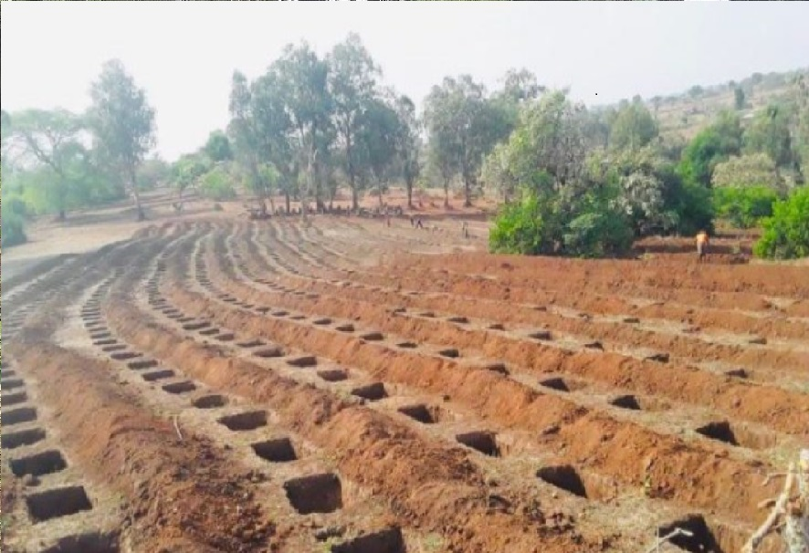

2020
Land Preparation for Planting Trees
The Ethiopian government has consistently made global headlines with ambitious tree planting targets,
since launching its Green Legacy Initiative (GLI) in 2019 – which seeks to plant 20 billion trees
with in four years until 2022. Prime Minister Abiy Ahmed launched this year’s tree planting campaign
in Addis Ababa on 21 June 2022.
“Caring for the nation involves the protection of our citizens, just as caring for the land
that sustains us involves endeavors like our Green Legacy initiative,” Prime Minister Abiy said.
You want to join us or sponser!
Please reach out to Ethiopian Green Legacy Initiative team via email
info@pmo.gov.et
This company logo was designed by one Kenyan through a fair competition late last year
The Green Legacy Initiative, promoted by the Ethiopian Prime Minister to reach national green environmental goals and face the effects of deforestation and climate change in the country. The logo is designed to refelct the Ethiopia is committed to be green and clean in the near fetaure.
Take a look at the preparation and tree palanting campaign as part of the Green Legacy Initiative in various region of the country.
2020
Land Preparation for Planting Trees
2021
The GLI mobilized many Ethiopians to engage in tree planting